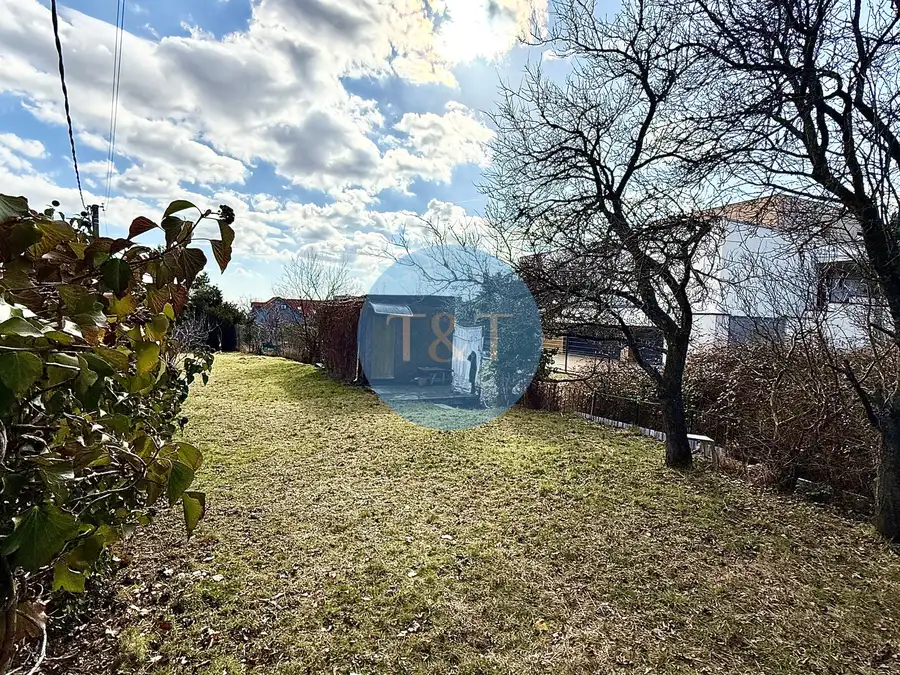
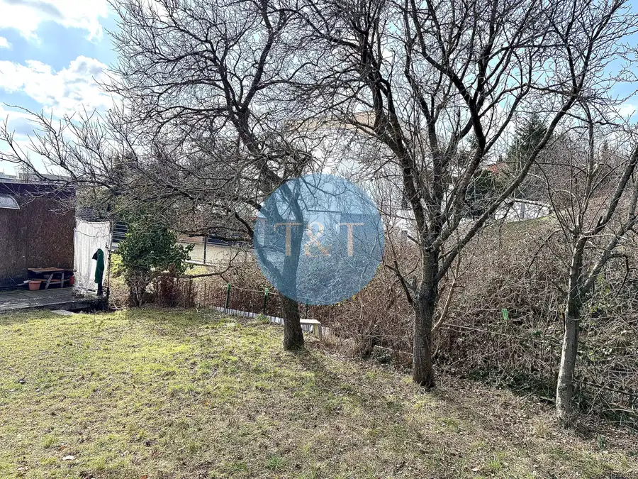
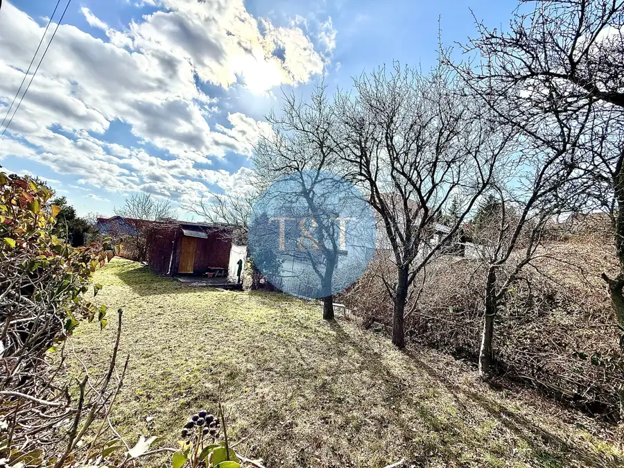
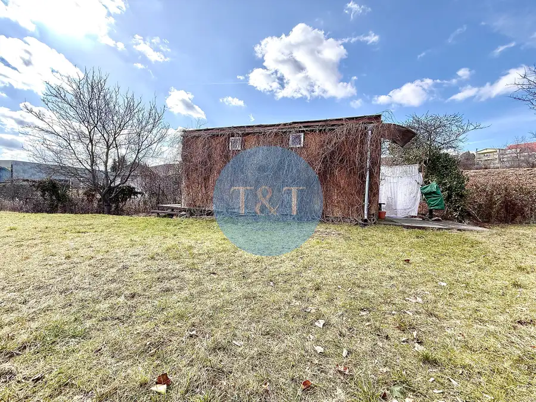
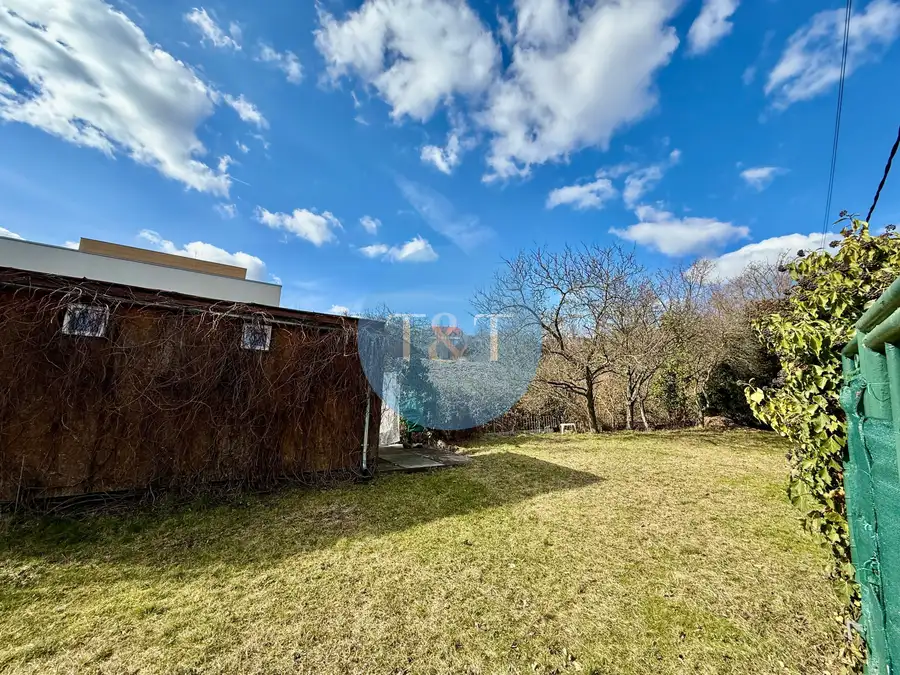
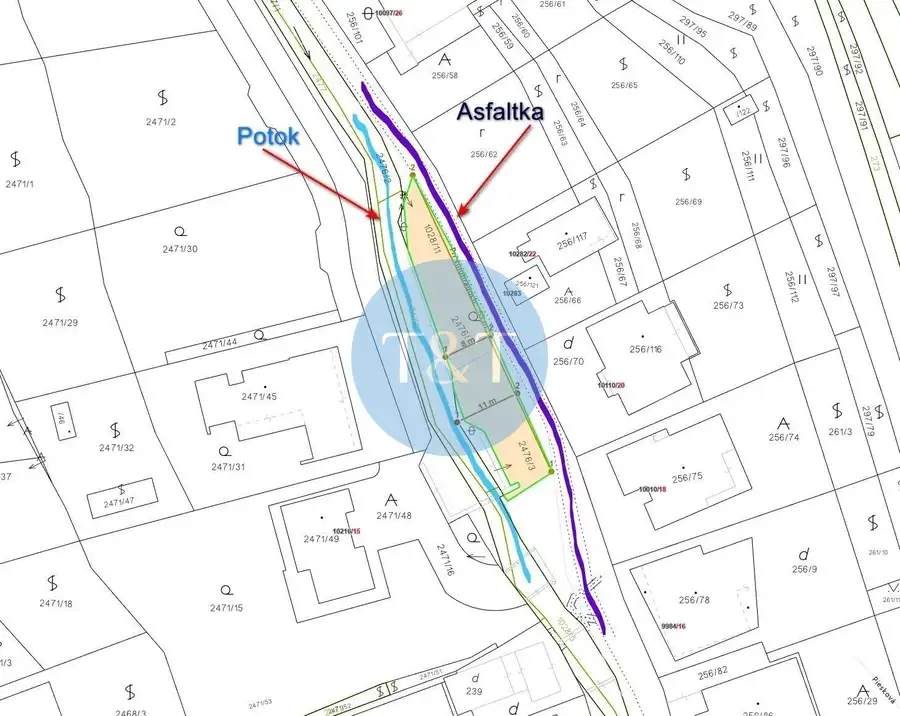
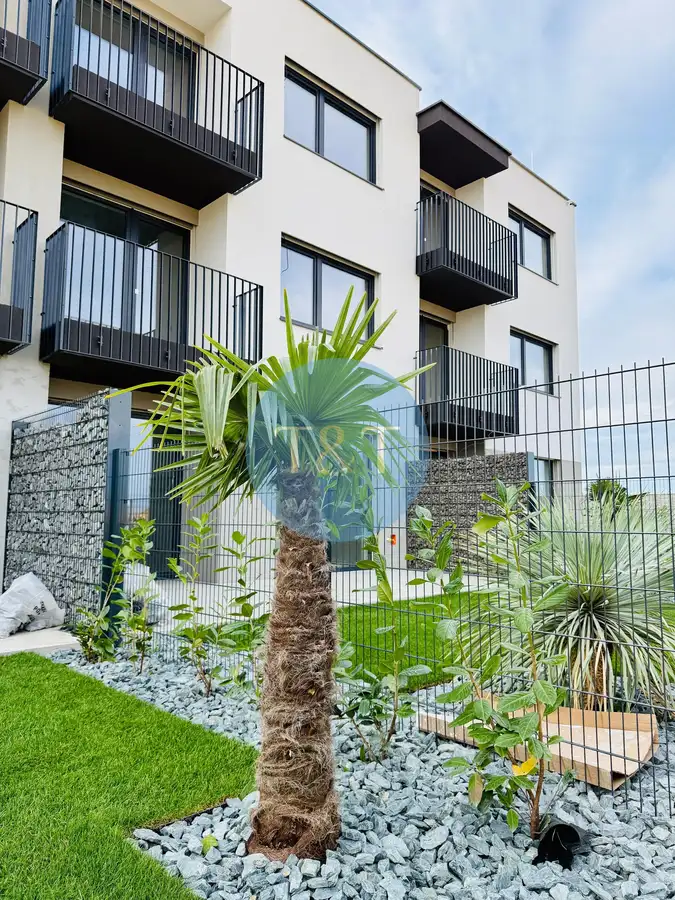
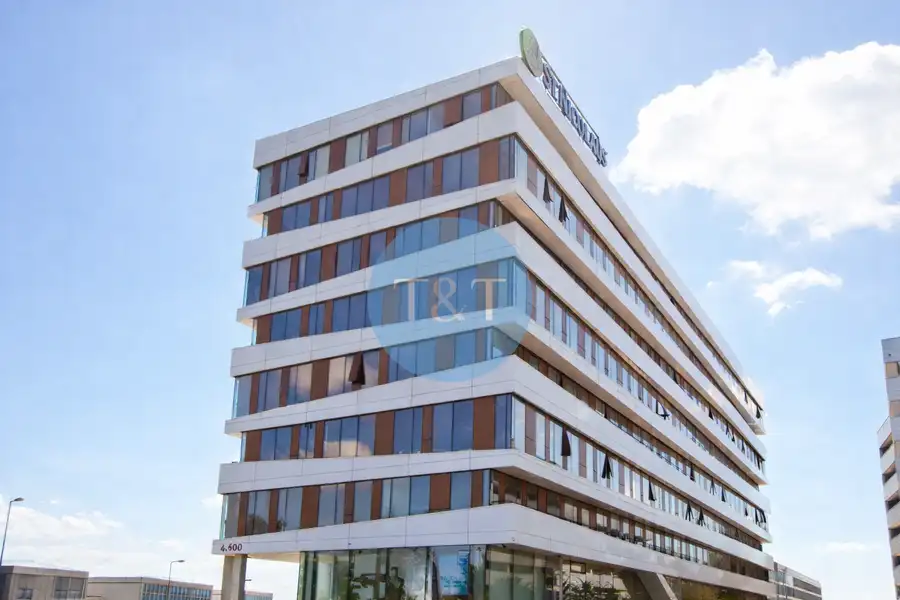

EXKLUZÍVNE | Pozemok 377 m² | Bratislava – Rača | Piesková ulica
Rača, Bratislava






- Plocha377 m²
O nehnuteľnosti
Realitná kancelária Tom & Tiles ponúka na predaj pozemok o výmere 377 m² v obľúbenej lokalite Bratislava – Rača, Piesková ulica.Základné informácievýmera pozemku: 377 m²prístup z asfaltovej komunikáciev blízkosti sa nachádza potok a pás zeleneMožnosti využitiaako záhrada alebo rekreačný pozemokako investícia v stabilnej a vyhľadávanej lokaliteLokalitaPozemok sa nachádza v pokojnej rezidenčnej časti Rače s výbornou dostupnosťou do centra mesta a kompletnou občianskou vybavenosťou.V pešej dostupnosti sa nachádzajú:potraviny, školy a škôlkyzastávky MHDzeleň, príroda a vinohrady Malých KarpátLokalita ponúka kombináciu pokojného bývania a dobrej dopravnej dostupnosti.Cena: 109.000 € – konečná cena zahŕňa:províziu realitnej kanceláriekompletný právny serviskatastrálne poplatkyV prípade záujmu o podrobnejšie informácie nás neváhajte kontaktovať. Radi Vám poskytneme všetky potrebné detaily.Mgr. Lukáš Kachlík – 0903 168 440kachlik@ttre.sk
Parametre
- Druh
- Pozemok pre rodinné domy
- Dátum zverejnenia
- 25. 02. 2026
- Elektrina
- Na pozemku - 230 V, Na pozemku - 400 V
- Odpadové vody
- Pri pozemku - Kanalizácia
- Plocha pozemku
- 377 m²
- Plyn
- Nedostupné
- Pripravenosť k výstavbe
- Schválené v územnom pláne
- Terén pozemku
- Mierne svahovitý
- Typ
- Predaj
- Voda
- Na pozemku - Diaľkový vodovod
- Šírka pozemku
- 11
Kde to je


Mohlo by Vás zaujímať

BytNové 123 000 €Bez provízie / 2-izbový byt v skolaudovanej novostavbe s balkónom a parkovacím miestom – Košúty Košúty 2-izbový54 m²1. podlažie BytNové
123 000 €Bez provízie / 2-izb. byt v skolaudovanej novostavbe s balkónom a parkovacím miestom – Košúty
Galanta
2-izbový54 m²1. podlažie
BytNové
123 000 €Bez provízie / 2-izb. byt v skolaudovanej novostavbe s balkónom a parkovacím miestom – Košúty
Galanta
2-izbový54 m²1. podlažie

Komerčné priestoryNové Cena na vyžádáníOMNIA kancelárie – rôzne veľkosti priestorov + jednoduché parkovanie Ružinov, Bratislava 590 m²